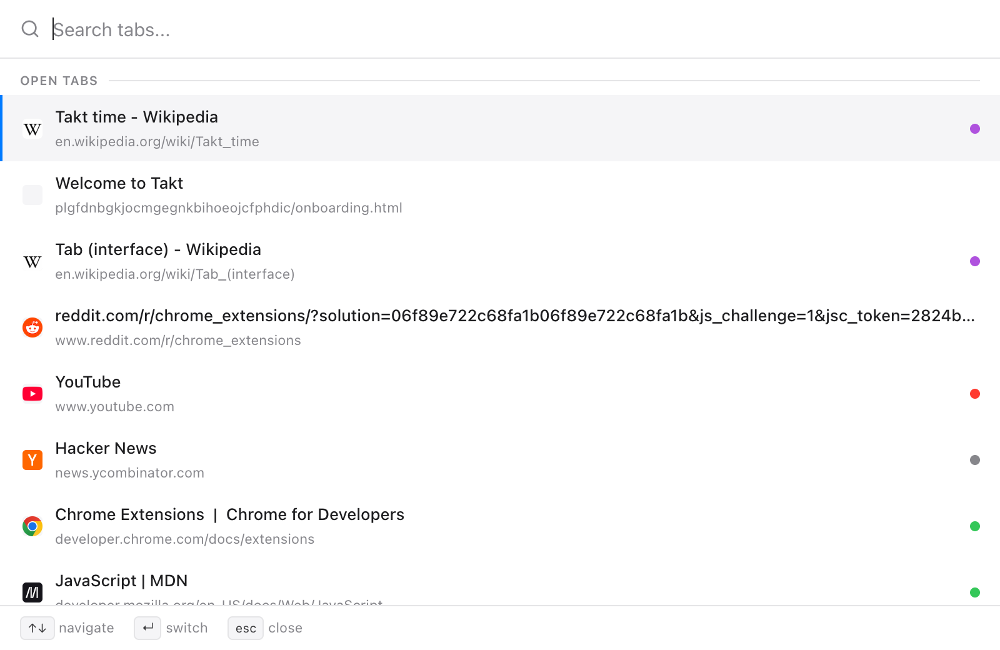
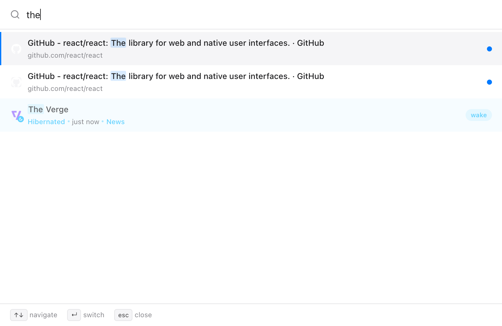
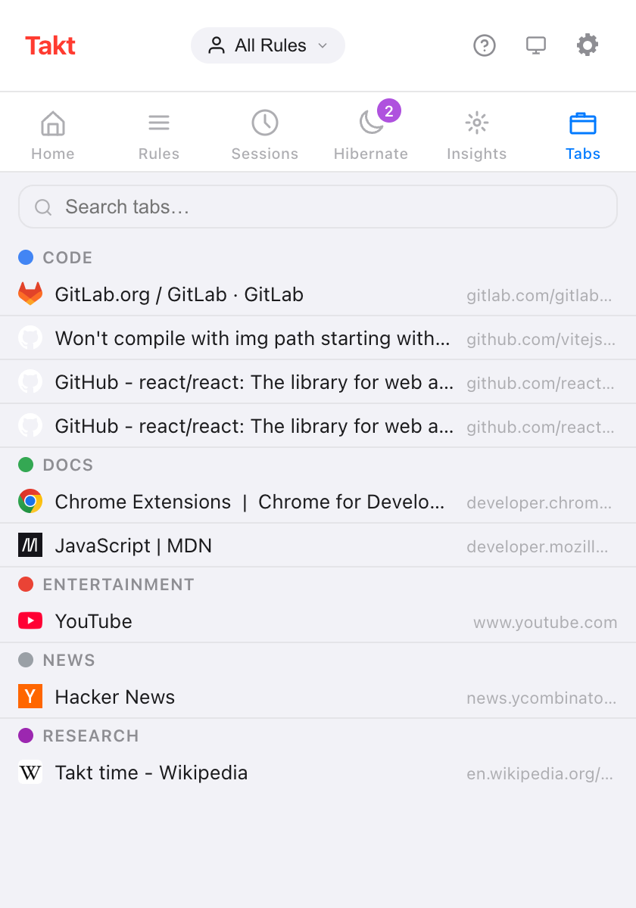

Short answer: Alt+Shift+Space opens a search box over the page. Type, use the arrow keys, press Enter.
- Searches open tabs, hibernated tabs, and browsing history if you grant permission.
- Works on
chrome://pages too, in a small window. - Quick Switch is Premium ($3/month or $30/year). The search box in the popup's Tabs pane is free.
Why is finding a tab so slow?
Past 20 or so tabs, Chrome's tab strip shows favicons and little else. You hunt by icon, click the wrong GitHub tab, try again.
Typing is faster than looking. You remember "the pull request about caching", not where it sits in the strip.
How do I search my open tabs from the keyboard?
- Press Alt+Shift+Space. A search box opens over the current page.
- Type any part of the title or URL. Matching ignores case, and the list updates on every keystroke.
- Move with ↑ and ↓. The selection wraps around at the ends.
- Press Enter to jump. Takt focuses the tab and brings its window forward.
Two more keys: Tab copies the selected result's title into the search box, and Esc closes it. The box also closes if you click outside it or switch window.

What does Quick Switch search?
| Source | When it shows | Enter does |
|---|---|---|
| Open tabs | Always; most recently used first, current tab last | Switches to the tab |
| Hibernated tabs | Always, up to 50 | Wakes the tab where it was |
| History | Once you type, with the History permission; up to 20 | Opens it in a new tab |
The order is fixed: open tabs, then hibernated tabs, then history. History skips pages that are already open or hibernated, and never lists chrome:// or extension pages.

That last row is the point of having search and hibernation in the same extension. You can close tabs without fear of losing them, because typing their name brings them back.
Does it work on chrome:// pages?
Yes. Extensions can't draw on Chrome's own pages, so there Quick Switch opens as a 560 × 480 window instead. This applies to chrome://, chrome-extension://, about: and chrome-untrusted:// pages and the Chrome Web Store. The keys are the same.
Is there a free way to search tabs?
Yes: the Tabs pane in Takt's popup. It lists every open tab under its tab group, with ungrouped tabs in their own section. Type in the search box to filter by title or URL; Esc clears it. Click a row to focus that tab and bring its window to the front.

| Popup Tabs pane | Quick Switch | |
|---|---|---|
| Plan | Free | Premium |
| How you open it | Click the Takt icon, then Tabs | Alt+Shift+Space |
| Open tabs | Yes, by group | Yes, most recent first |
| Hibernated tabs | No (they have their own pane) | Yes |
| History | No | With permission |
| Mouse needed | To open and pick | No |
Can I change the shortcut?
Yes. Go to chrome://extensions/shortcuts, find Takt, click the pencil next to Quick-switch and press the keys you want.
Is my history sent anywhere?
No. History search is off until you grant the optional History permission in Settings → Permissions. The search runs inside Chrome, and you can revoke the permission on the same page. Without it, Quick Switch still searches open and hibernated tabs.
What Quick Switch doesn't do
It matches the exact letters you type, anywhere in the title or URL. There is no fuzzy matching, so "gthub" finds nothing. Free users pressing the shortcut get no response; use the Tabs pane instead.
Stop hunting through favicons. Type the tab's name.
Add Takt to ChromeFAQ
What is the shortcut to search open tabs with Takt?
Alt+Shift+Space opens Quick Switch. Change it at chrome://extensions/shortcuts.
Does Quick Switch work on chrome:// pages?
Yes. On pages extensions can't run on, it opens in a 560 × 480 window instead of over the page.
Is there a free way to search tabs in Takt?
Yes. The popup's Tabs pane lists open tabs by group and has a search box. Quick Switch is Premium, at $3/month or $30/year.
Does Quick Switch search my browsing history?
Only with the optional History permission. History results appear once you type, up to 20, and the search runs inside Chrome.